Since aldehydes and ketones both possess the carbonyl functional group, they undergo similar chemical reactions.
1. Nucleophilic addition reactions
Contrary to electrophilic addition reactions observed in alkenes (refer Unit 13, Class XI), the aldehydes and ketones undergo nucleophilic addition reactions.
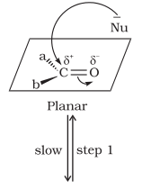
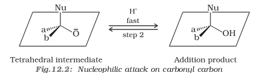
(i) Mechanism of nucleophilic addition reactions
A nucleophile attacks the electrophilic carbon atom of the polar carbonyl group from a direction approximately perpendicular to the plane of sp2 hybridised orbitals of carbonyl carbon (Fig. 12.2). The hybridisation of carbon changes from sp2 to sp3 in this process, and a tetrahedral alkoxide intermediate is produced. This intermediate captures a proton from the reaction medium to give the electrically neutral product. The net result is addition of Nu– and H+ across the carbon oxygen double bond as shown in Fig. 12.2.(ii) Reactivity
Aldehydes are generally more reactive than ketones in nucleophilic addition reactions due to steric and electronic reasons. Sterically, the presence of two relatively large substituents in ketones hinders the approach of nucleophile to carbonyl carbon than in aldehydes having only one such substituent. Electronically, aldehydes are more reactive than ketones because two alkyl groups reduce the electrophilicity of the carbonyl more effectively than in former.Example 12.3
Would you expect benzaldehyde to be more reactive or less reactive in nucleophilic addition reactions than propanal? Explain your answer.
Solution
The carbon atom of the carbonyl group of benzaldehyde is less electrophilic than carbon atom of the carbonyl group present in propanal. The polarity of the carbonyl group is reduced in benzaldehyde due to resonance as shown below and hence it is less reactive than propanal.(iii) Some important examples of nucleophilic addition and nucleophilic addition-elimination reactions:
(a) Addition of hydrogen cyanide (HCN): Aldehydes and ketones react with hydrogen cyanide (HCN) to yield cyanohydrins. This reaction occurs very slowly with pure HCN. Therefore, it is catalysed by a base and the generated cyanide ion (CN-) being a stronger nucleophile readily adds to carbonyl compounds to yield corresponding cyanohydrin.Cyanohydrins are useful synthetic intermediates.
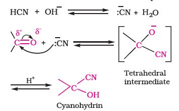
(b) Addition of sodium hydrogensulphite: Sodium hydrogensulphite adds to aldehydes and ketones to form the addition products. The position of the equilibrium lies largely to the right hand side for most aldehydes and to the left for most ketones due to steric reasons. The hydrogensulphite addition compound is water soluble and can be converted back to the original carbonyl compound by treating it with dilute mineral acid or alkali. Therefore, these are useful for separation and purification of aldehydes.
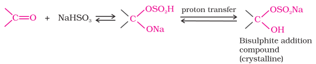
(c) Addition of Grignard reagents: (refer Unit 11, Class XII).
(d) Addition of alcohols: Aldehydes react with one equivalent of monohydric alcohol in the presence of dry hydrogen chloride to yield alkoxyalcohol intermediate, known as hemiacetals, which further react with one more molecule of alcohol to give a gem-dialkoxy compound known as acetal as shown in the reaction.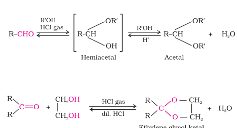
Ketones react with ethylene glycol under similar conditions to form cyclic products known as ethylene glycol ketals.
Dry hydrogen chloride protonates the oxygen of the carbonyl compounds and therefore, increases the electrophilicity of the carbonyl carbon facilitating the nucleophilic attack of ethylene glycol. Acetals and ketals are hydrolysed with aqueous mineral acids to yield corresponding aldehydes and ketones respectively.(e) Addition of ammonia and its derivatives: Nucleophiles, such as ammonia and its derivatives H2N-Z add to the carbonyl group of aldehydes and ketones. The reaction is reversible and catalysed by acid. The equilibrium favours the product formation due to rapid dehydration of the intermediate to form>C=N-Z.
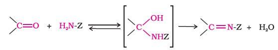
Z = Alkyl, aryl, OH, NH2, C6H5NH, NHCONH2, etc.
Table 12.2: Some N-Substituted Derivatives of Aldehydes and Ketones (>C=N-Z)
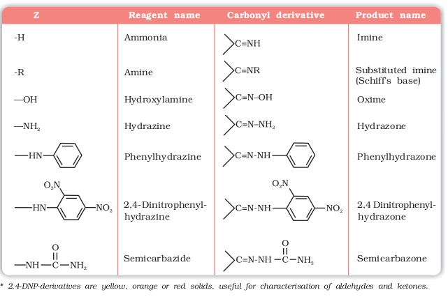
2. Reduction
(i) Reduction to alcohols: Aldehydes and ketones are reduced to primary and secondary alcohols respectively by sodium borohydride (NaBH4) or lithium aluminium hydride (LiAlH4) as well as by catalytic hydrogenation (Unit 11, Class XII). (ii) Reduction to hydrocarbons: The carbonyl group of aldehydes and ketones is reduced to CH2 group on treatment with zincamalgam and concentrated hydrochloric acid [Clemmensen reduction] or with hydrazine followed by heating with sodium or potassium hydroxide in high boiling solvent such as ethylene glycol (Wolff-Kishner reduction).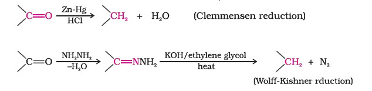
Bernhard Tollens (1841-1918) was a Professor of Chemistry at the University of Gottingen, Germany.
3. Oxidation
Aldehydes differ from ketones in their oxidation reactions. Aldehydes are easily oxidised to carboxylic acids on treatment with common oxidising agents like nitric acid, potassium permanganate, potassium dichromate, etc. Even mild oxidising agents, mainly Tollens' reagent and Fehlings' reagent also oxidise aldehydes.Ketones are generally oxidised under vigorous conditions, i.e., strong oxidising agents and at elevated temperatures. Their oxidation involves carbon-carbon bond cleavage to afford a mixture of carboxylic acids having lesser number of carbon atoms than the parent ketone.
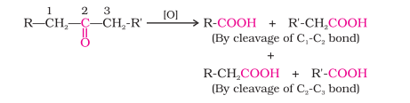
The mild oxidising agents given below are used to distinguish aldehydes from ketones:
(i) Tollens' test: On warming an aldehyde with freshly prepared ammoniacal silver nitrate solution (Tollens' reagent), a bright silver mirror is produced due to the formation of silver metal. The aldehydes are oxidised to corresponding carboxylate anion. The reaction occurs in alkaline medium.(ii) Fehling's test: Fehling reagent comprises of two solutions, Fehling solution A and Fehling solution B. Fehling solution A is aqueous copper sulphate and Fehling solution B is alkaline sodium potassium tartarate (Rochelle salt). These two solutions are mixed in equal amounts before test. On heating an aldehyde with Fehling's reagent, a reddish brown precipitate is obtained. Aldehydes are oxidised to corresponding carboxylate anion. Aromatic aldehydes do not respond to this test.
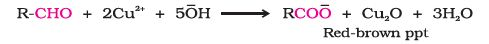
(iii) Oxidation of methyl ketones by haloform reaction: Aldehydes and ketones having at least one methyl group linked to the carbonyl carbon atom (methyl ketones) are oxidised by sodium hypohalite to sodium salts of corresponding carboxylic acids having one carbon atom less than that of carbonyl compound. The methyl group is converted to haloform. This oxidation does not affect a carbon-carbon double bond, if present in the molecule.
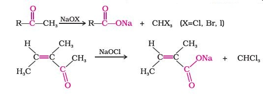
Iodoform reaction with sodium hypoiodite is also used for detection of CH3CO group or CH3CH(OH) group which produces CH3CO group on oxidation.
Example 12.4
An organic compound (A) with molecular formula C8H8O forms an orange-red precipitate with 2,4-DNP reagent and gives yellow precipitate on heating with iodine in the presence of sodium hydroxide. It neither reduces Tollens' or Fehlings' reagent, nor does it decolourise bromine water or Baeyer's reagent. On drastic oxidation with chromic acid, it gives a carboxylic acid (B) having molecular formula C7H6O2. Identify the compounds (A) and (B) and explain the reactions involved.
Solution
(A) forms 2,4-DNP derivative. Therefore, it is an aldehyde or a ketone. Since it does not reduce Tollens' or Fehling reagent, (A) must be a ketone. (A) responds to iodoform test. Therefore, it should be a methyl ketone. The molecular formula of (A) indicates high degree of unsaturation, yet it does not decolourise bromine water or Baeyer's reagent. This indicates the presence of unsaturation due to an aromatic ring.
Compound (B), being an oxidation product of a ketone should be a carboxylic acid. The molecular formula of (B) indicates that it should be benzoic acid and compound (A) should, therefore, be a monosubstituted aromatic methyl ketone. The molecular formula of (A) indicates that it should be phenyl methyl ketone (acetophenone). Reactions are as follows: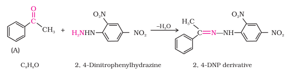
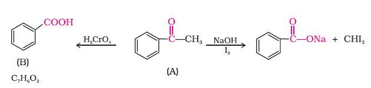
4. Reactions due to a-hydrogen
Acidity of α -hydrogens of aldehydes and ketones: The aldehydes and ketones undergo a number of reactions due to the acidic nature of α -hydrogen.The acidity of α -hydrogen atoms of carbonyl compounds is due to the strong electron withdrawing effect of the carbonyl group and resonance stabilisation of the conjugate base.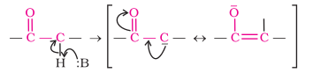
(i) Aldol condensation: Aldehydes and ketones having at least one α-hydrogen undergo a reaction in the presence of dilute alkali as catalyst to form β-hydroxy aldehydes (aldol) or β-hydroxy ketones (ketol), respectively. This is known as Aldol reaction.
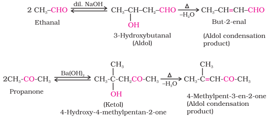
The name aldol is derived from the names of the two functional groups, aldehyde and alcohol, present in the products. The aldol and ketol readily lose water to give α ,β-unsaturated carbonyl compounds which are aldol condensation products and the reaction is called Aldol condensation. Though ketones give ketols (compounds containing a keto and alcohol groups), the general name aldol condensation still applies to the reactions of ketones due to their similarity with aldehydes.
(ii) Cross aldol condensation: When aldol condensation is carried out between two different aldehydes and / or ketones, it is called cross aldol condensation. If both of them contain α-hydrogen atoms, it gives a mixture of four products. This is illustrated below by aldol reaction of a mixture of ethanal and propanal.
5. Other reactions
(i) Cannizzaro reaction: Aldehydes which do not have an α-hydrogen atom, undergo self oxidation and reduction (disproportionation) reaction on heating with concentrated alkali. In this reaction, one molecule of the aldehyde is reduced to alcohol while another is oxidised to carboxylic acid salt.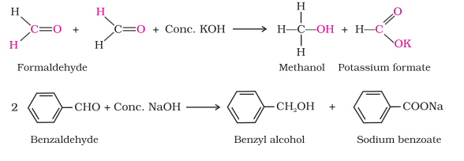
(ii) Electrophilic substitution reaction: Aromatic aldehydes and ketones undergo electrophilic substitution at the ring in which the carbonyl group acts as a deactivating and meta-directing group.
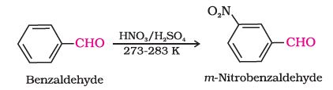